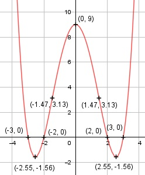

Aufgabe 49 f(x) = 0,25x4 - 3,25x2 + 9 f'(x) = x3 - 6,5x, f''(x) = 3x2 - 6,5, f'''(x) = 6x Definitionsbereich: -∞ < x < ∞ Wertebereich: -1,56 ≤ f(x) < ∞ (siehe Extrempunkte) Asymptoten: - Symmetrie: nur gerade Exponenten --> f(-x) = 0,25 * (-x)4 - 3,25 * (-x)2 + 9 = = 0,25x4 - 3,25x2 + 9 = f(x) --> achsensymmetrisch zur y-Achse Nullstellen: 0,25x4 - 3,25x2 + 9 = 0 Substitution z = x2 0,25z2 - 3,25z + 9 = 0 |:0,25 z2 - 13z + 36 = 0 p, q - Formel: p = -13, q = 36 z1,2 = z1,2 = 6,5 ± z1,2 = 6,5 ± z1,2 = 6,5 ± 2,5 z1 = 9 z2 = 4 Rücksubstitution: 9 = x1,22 |ⱱ x1,2 = ± 3 4 = x3,42 |ⱱ x3,4 = ± 2 N1(3|0), N2(-3|0), N3(2|0), N4(-2|0) Schnittpunkt mit der y-Achse: f(0) = 0,25 * 04 - 3,25 * 02 + 9 = 9 Sy(0|9) Extrempunkte: x3 - 6,5x = 0 x * (x2 - 6,5) = 0 x1 = 0, f(0) = 9 x2 - 6,5 = 0 |+6,5 x2 = 6,5 |ⱱ x2,3 = ± 2,55, f(2,55) = 0,25 * (2,55)4 - 3,25 * (2,55)2 + 9 = = -1,56 f(-2,55) = 0,25 * (-2,55)4 - 3,25 * (-2,55)2 + 9 = = -1,56 f''(0) = 3 * 02 - 6,5 < 0 --> Hochpunkt (0|9) f''(2,55) = 3 * 2,552 - 6,5 > 0 --> Tiefpunkt- (2,55|-1,56) f''(2,55) = 3 * (-2,55)2 - 6,5 < 0 --> Tiefpunkt (-2,55|-1,56) Wendepunkte: 3x2 - 6,5 = |+6,5 3x2 = 6,5 | :3 x2 = 6,5/3 |ⱱ x1,2 = ± 1,47 x1 = 1,47, f(1,47) = 0,25 * (1,47)4 - 3,25 * (1,47)2 + 9 = = 3,13 x2 = -1,47 f(-1,47) = 0,25 * (-1,47)4 - 3,25 * (-1,47)2 + 9 = = 3,13 f'''(1,47) ≠ 0 -->Wendepunkt (1,47|3,13) f'''(-1,47) ≠ 0 --> Wendepunkt (-1,47|3,13) Graph:
